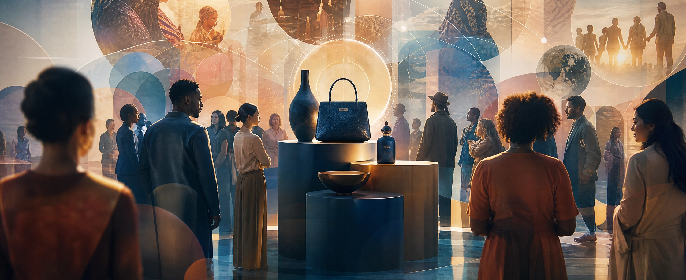
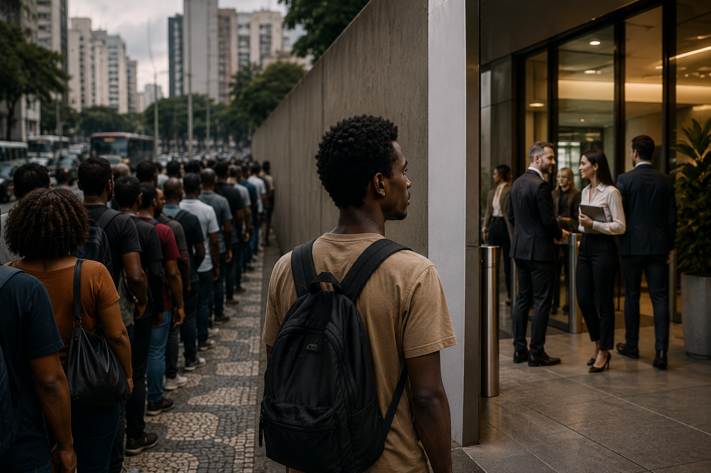
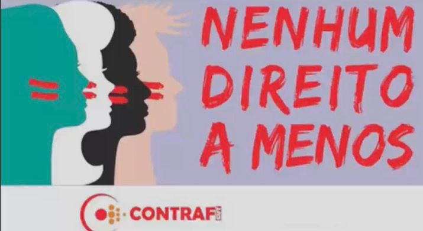

Programa de Aprendizagem - IOS
No cenário atual, o mercado não se organiza apenas pela oferta de produtos, mas também pela forma como são percebidos pelos diferentes públicos. O valor está ligado a fatores culturais, sociais e simbólicos.

A desigualdade racial no mercado de trabalho aparece de forma evidente em grandes cidades como São Paulo. Pessoas negras enfrentam mais dificuldades de acesso a oportunidades, além de preconceitos muitas vezes sutis.

O problema se manifesta na menor contratação de pessoas negras, diferenças salariais e baixa presença em cargos de liderança. Esses fatores são consequência do racismo estrutural e desigualdade social.
A desigualdade não é resultado apenas de atitudes individuais, mas de estruturas históricas e sociais. Fatores como educação, classe social e gênero influenciam diretamente essa realidade.
A valorização cultural e a inclusão são fundamentais para mudar esse cenário. É necessário ampliar o acesso à educação, promover diversidade nas empresas e combater estereótipos.
O podcast tem como objetivo dar visibilidade às mulheres negras da periferia, mostrando suas histórias, desafios e conquistas no mercado de trabalho.
